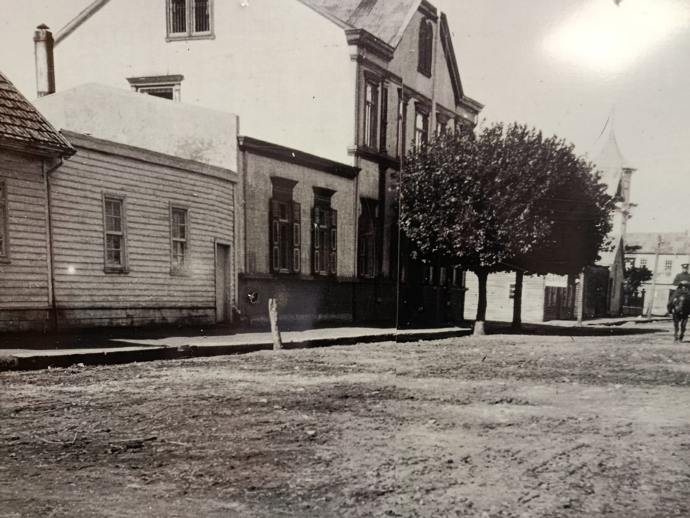
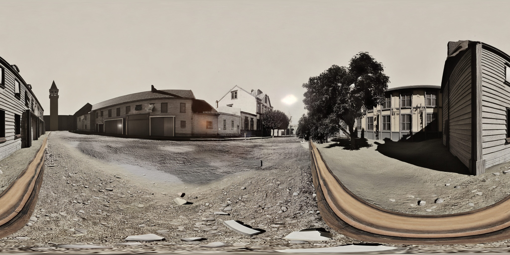

El resto de esta demostración fue generado para esta presentación: no es fiel ni real. Esta es la foto real del lugar.

Fotografía 360° del lugar. Mueve el celular para mirar alrededor, o desliza con el dedo.
